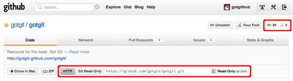
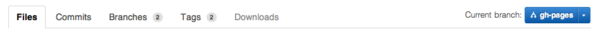
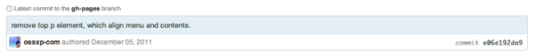
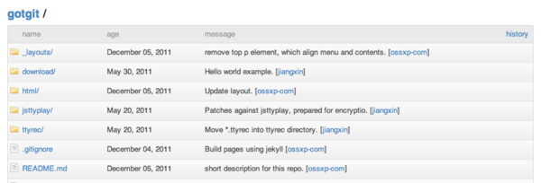
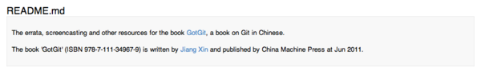
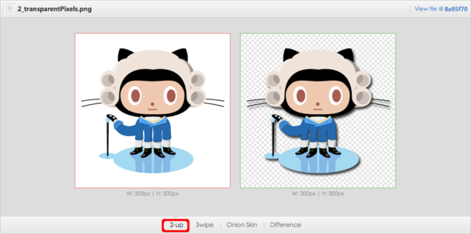
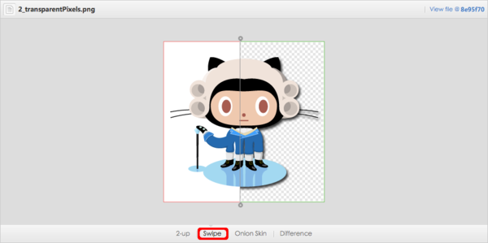

2.2. 浏览托管项目¶
在上一节学习了如何建立GitHub的账户，接下来在建立自己的项目托管之前，先来看看别人是怎么做的。
在GitHub中搜索字符串“GotGit”，可以搜索到我建立的一个项目，项目地址是：https://github.com/gotgit/gotgit/。由上至下，GotGit项目首页可以分为如下几个区域。
区域一：项目概要介绍及版本库URL等。
项目GotGit托管在组织账号 gotgit 之下[1]，并且已经有若干关注用户和派生项目。最下面一行显示版本库的访问地址，只显示了HTTP和Git-daemon两个协议的URL地址，这是因为当前用户对该版本库只具有只读权限，因此没有显示SSH协议的URL地址。
图2-10：版本库概要信息
使用任意一种协议均可克隆该Git版本库，但要注意只有Git 1.6.6及以上版本才支持智能HTTP协议，低版本Git则无法用HTTP协议克隆GitHub上的版本库[2]。
$ git clone https://github.com/gotgit/gotgit.git
或者使用Git-daemon协议。
$ git clone git://github.com/gotgit/gotgit.git
区域二：代码浏览子菜单及分支切换对话框。
默认项目代码页（即项目首页）显示项目文件列表（即Files子菜单），如图2-11所示。右侧还显示项目gotgit/gotgit默认的分支为gh-pages而非常见的master分支。关于gh-pages分支，在“第3.5.2节 创建项目主页”会介绍该分支的神奇用途。
图2-11：代码浏览子菜单及分支
区域三：显示最新提交的提交说明、提交用户头像、提交时间等提交信息。右侧还显示此次提交对应的提交ID。
图2-12：提交信息
区域四：目录树。每个目录和文件后面还显示最后一次变更的提交说明。
图2-13：目录树
区域五：根目录下的文件README.md格式化为HTML输出。
GitHub内置了多种文本标记语言的支持，如Markdown、Textile、reStructuredText、asciidoc、Wiki等。当发现根目录下的README文件后，会根据其扩展名判断所用的标记语言类型，自动转换为HTML格式显示。
图2-14：README文件
在GitHub的页面中可以使用键盘快捷键，按下问号（?）会在弹出窗口显示当前页面可用的快捷键。
在项目的代码浏览页按下字母“w”，弹出分支切换菜单，如图2-15所示。
图2-15：快捷键“w”切换分支
按下字母“t”，开启目录树中文件查找和过滤。图2-16就是在按下字母“t”后，当逐一输入单词“download”时的过滤效果。
图2-16：快捷键“t”开启过滤器在目录树中搜索
点击代码浏览子菜单中的“Commits”（提交）显示版本库GotGit的提交历史，如图2-17所示。
图2-17：提交历史
提交历史页面也支持快捷键，按下问号（?）或者点击页面中的键盘标志会显示快捷键帮助。其中快捷键”j”和”k”用于在提交列表中向上和向下选择提交，在选中的提交按下回车键，会显示该提交包含的文件改动差异，如图2-18所示。
图2-18：文本文件改动差异
在文本文件的差异比较中，不但将有差异的行标识出来，还将行内具体改动的字词用特殊颜色进行了标识，不由得感叹GitHub的细致入微。
GitHub还支持对图形文件的差异比较，并提供四种比较方式。在如下地址：http://git.io/image-diff[3]提供了一个示例提交。您可以去尝试一下不同的图形文件比较方式，以便更直观地观察图形文件前后的改动。
默认修改前后的两幅图片左右并排显示，如图2-19所示。
图2-19：左右并排比较图形文件差异
选择交换显示比较修改前后的图片，用鼠标左右拖动进度条，可以非常直观地看到图片的差异。如图2-20所示。
图2-20：交换显示图形文件比较差异
还提供洋葱皮和色差比较，自己动手试试吧。
网络图是GitHub的一大特色，显示一个项目的版本库被不同用户派生（Fork）后，各个版本库的派生关系。这个网络图最早使用Flash实现的，目前已经改为HTML5实现[4]。图2-21的示例网络图来自于Gitosis项目[5]。
图2-21：Gitosis项目网络图
Pull Requests（拉拽请求）是派生（Fork）版本库的开发者向项目贡献提交的方法。如图2-22所示，GotGit项目目前没有未被处理的Pull Request，但是可以看到有一个已经关闭的Pull Request请求。
图2-22：Pull Requests界面
这个Pull Request是GitHub用户agate发现了GotGit脚本中一个和ruby1.9不兼容的Bug，当我把agate派生版本库中的提交合并到GotGit版本库后，该Pull Request自动关闭。整个Pull Request的变更记录如图2-23所示。
图2-23：Pull Request的变更历史
缺陷追踪（Issue）也是GitHub工作流中一个重要的组件。GotGit项目用缺陷跟踪系统帮助维护《Git权威指南》一书的勘误，图2-24可以看到当前有2个打开的问题和9个已关闭的问题。

图2-24：缺陷追踪
GitHub还为项目提供报表分析。图2-25是GotGit项目中用到的开发语言分布图。
图2-25：GotGit项目开发语言分布图
图2-26是开发者对GotGit项目贡献分布图。
图2-26：GotGit项目贡献分布图
| [1] | 项目 gotgit 最早由用户 ossxp-com 创建，现已转移到组织 gotgit 账号之下。 |
| [2] | https://github.com/blog/809-git-dumb-http-transport-to-be-turned-off-in-90-days |
| [3] | 短格式URL，实际对应于: https://github.com/cameronmcefee/Image-Diff-View-Modes/commit/8e95f7 |
| [4] | https://github.com/blog/621-bye-bye-flash-network-graph-is-now-canvas |
| [5] | https://github.com/res0nat0r/gitosis |

{kind=link}
{kind=link}
{kind=link}
{kind=link}
{kind=link}
{kind=link}
{kind=link}
{kind=link}
{kind=link}
{kind=link}
{kind=link}
{kind=link}
{kind=link}
{kind=link}
{kind=link}
{kind=link}